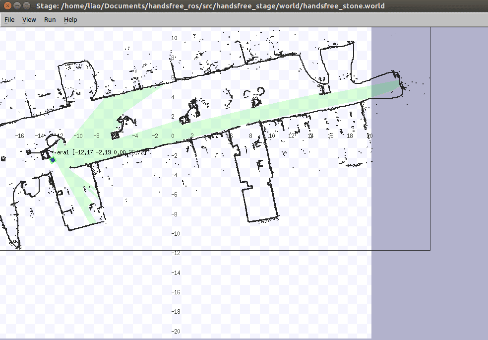
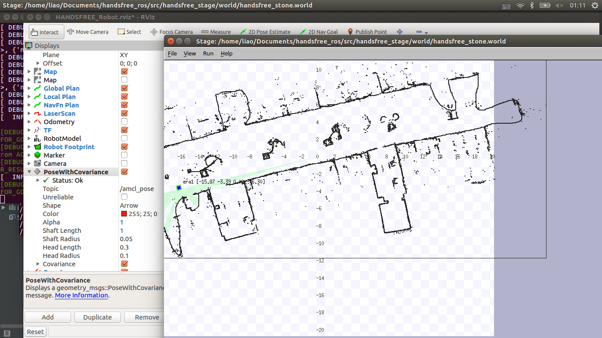

1. 行为树
这部分我们将以python smach框架为基础讲解机器人行为树，通过这部分的学习，您将了解到3种常用机器人行为树写法 --- 串行、并发于同步、抢占，由此为后期的人体跟踪教程和目标抓取教程学习打下坚实基础。注意本篇教程将会调用里程计及其简单应用教程中所编写的定点移动和定角度转动程序，同时还会使用move_base所提供的python调用接口
1.1. 什么是行为树
行为树 即状态机，其通过调用机器人其他子模块所提供的接口来控制机器人完成一系列复杂的行为(例如: 简单的人体跟踪)或者根据机器人某些传感器信息做出相应的行为(例如: 传感器检测到潜在危险时中断机械臂操作)，于编译器词法分析器中顺序执行状态机不同，机器人开发中所使用的状态机类型更加丰富，开发起来也更具挑战性。下面的内容将使用python smach框架，面向简单的实际应用需求，讲解三种常用机器人行为树类型写法。
1.2. 串行行为树
串行行为树是最简单的一种行为树写法，其只需要根据当前状态运行的输出结果来决定下一所要达到的状态即可。虽然写法简单，但串行行为树却足以满足许多应用场景需求。本节我们将首先编写一颗简单行为树来控制机器人在一边长为4米的正方形边上进行无线循环行走。随后，为更加贴近实际应用，我们还将使用move_base所提供的接口来实现简易版的巡逻功能。
1.2.1. 绕正方形行走
绕正方形行走程序流程图:
demo启动流程于对应效果:
- 1 输入demo启动指令
roslaunch handsfree_smach demo_smach_serial_square.launch
桌面出现stage画面，图中蓝色小方块为机器人，其正处于stage坐标系中的(-4.0, -4.0)位置，面朝Y轴正方向:
- 2 观察stage窗口，此时stage中的蓝色小方块正在进行右转动作，在右转结束后，方块开始绕边长为4米的正方形行走。stage输出如下图所示，若要停止该程序，请直接关闭运行改程序的终端即可
1.2.2. 简易版巡逻
由于实际应用环境需要机器人带有壁障功能，2-1节中所编写的绕边行走程序是很难在实际场景中有所应用的，为提供壁障功能，我们将移动命令发送端改为move_base，即我们只需向move_base系统提供几个全局目标点，而由move_base系统来进行路径规划和机器人移动控制。其实现步骤可分为两个部分: 获取兴趣目标点、根据目标点列表编写行为树，具体步骤如下所示(在学习本节之前，我们强烈建议您先完成雷达建图教程和自主导航教程):
第一部分-巡逻“兴趣点”选取
1 根据雷达建图教程中所介绍的方法，对巡逻目标区域进行建图。在地图建立完毕后，将其以.bmp格式保存在handsfree_stage/world文件夹中，打开同级目录下的handsfree_stone.world文件(或者新建一个.world后缀结尾的文件，并将handsfree_stone.world文件中内容粘贴到该新建文件中)，并对world文件中参数做相应修改:
2 打开stage模拟平台(若你使用了自己所创建的.world文件请务必修改launch文件中world文件地址,并对size参数进行调试直到stage中的地图于rviz中的地图可以匹配为止)，该过程可参考这篇文章
roslaunch handsfree_stage stage_handsfree_room.launch桌面出现stage窗口，stage中已经加载了在步骤1中所保存的地图和蓝色机器人一个:
3 运行map_server节点和amcl节点(已经写在了move_base_amcl.launch一个文件中)，同时打开rviz接收相关话题
roslaunch handsfree_stage move_base_amcl_stage.launch若运行无误，则运行终端和rviz显示结果如下:
4 根据机器人在stage中的实际位置设置amcl算法的初始位置(设置方法可参考自主导航教程中初始位置标定)，在初始位置设置完成后。我们打开新的终端，执行命令:
rostopic echo /amcl_pose执行成功后终端输出amcl粒子滤波算法对机器人当前位置信息的最优估计:
拖动stage中的机器人到"兴趣点"，在到达目标点后切换到显示/amcl_pose的终端，记录amcl算法对机器人当前位置定位信息的最优估计。
第二部分-简易巡逻
在前一部分中我们根据实际需求的需要，选取了地图几个点作为巡逻的"兴趣点"，在这一部分中我们将采用move_base系统所提供的python接口以及python smach框架将前一部分选取的"兴趣点"作为目标点来编写简易巡逻程序。
- 1 本节的串行行为树写法可参考2-1部分，若对move_base所提供的python接口不太熟悉的读者，可参考这篇教程
2 本节所提供的demo运行指令如下所示(运行前先确保smach_patrol.py已获得可执行权限):
roslaunch handsfree_smach demo_smach_patrol.launch若运行无误，则桌面显示stage画面和rviz界面如下所示:


- 3 将窗口切换至stage和rviz，发现move_base正在进行路径规划，stage中的机器人正根据第一部分。
1.3. 并发同步行为树
需要对python smach所提供的Concurrent State Machine接口进行学习的读者，请先参考这篇官方文档。关于"Concurrent"这个词，笔者认为更加准确的翻译应该为"并发"----即并发地执行多个状态的代码，而pyhon smach则是向用户提供了这种并发执行的接口，同时通过由用户指定"outcome_map"来实现多个并发执行状态的同步操作。
1.3.1. 关于同步的解释
考虑到存在一些读者没有学习过操作系统相关课程，下面用一个简单例子向大家解释一下“同步”的含义:
假定现有3个事件A、B、C，事件C需要事件A，B中所产生的数据，因此事件C需在事件A，B执行完毕后才能开始执行，事件A ，B则是并发执行，并且无法确定哪个事件会首先结束。此时我们需要一种机制，通过使用这种机制来确保事件A，B均执行完毕且有数据输出时，事件C才开始执行。这种机制即同步，可通过使用系统所提供的互斥锁或者信号量来实现多个线程的同步。
1.3.2. 使用并发同步行为树
并发同步行为树可适用于很多实际应用场景，但为便于大家加深对并发同步行为树的理解，本节将使用python smach所提供的Concurrent State Machine接口以及之前所编写的定点移动程序来实现对两个机器人的并发同步控制。
并发控制两台机器人程序流程图:
注意:0号机器人和1号机器人均是以相同速度同时进行移动(即并发运行过程)，若一个机器人完成了目标距离的移动，需停留在原地等待另一台机器人结束运动后才能开始下一次运动(即同步过程)
demo启动流程与对应效果:
1 打开终端输入以下指令，启动stage模拟平台和并行状态机程序
roslaunch handsfree_smach demo_smach_concurrence.launch桌面出现stage画面，stage中出现了两台机器人，均面朝Y轴正方向
观察两个机器人的运动情况：两台机器人先同时运动一会儿，随后其中一台停止运动，待另外一台机器人达到目标点后，两台机器人再次同时开始运动。(可以理解为每次停止就是一次并发)
1.4. 抢占式行为树
抢占式行为树是三种行为树类型中最为复杂的，但却是最能体现机器人特点的决策方法----即机器人通过传感器对外部环境的感知数据来实时改变机器人当前行为。在进行本节学习之前，您最好已经理解了并发同步行为树的运行机制并且已经熟悉了python smach所提供的大部分官方教程。
1.4.1. 抢占式行为树运行机制
相信学习过ros actionlib的读者，对这个“抢占”词并不陌生，即某个任务正在执行时接收到其它程序的抢占请求，随即接收到抢占请求的任务对该请求做出响应，中断当前正在执行的任务(注意不是操作系统强制中断这个程序，而是由程序员编写代码检测并接收抢占响应，随后根据抢占请求来决定是否中断当前正在执行的任务)。python smach所提供的抢占机制亦是如此运行方式，每当一个状态完成或者状态机接收到某个话题所传递的消息时，可根据状态输出结果或者接收到的消息内容来决定是否向并发运行的其它状态发出抢占请求，而其他并发运行的状态接收到抢占请求后做出相应响应。
1.4.2. 使用抢占式行为树
抢占式行为树将在后面的人体跟踪教程和目标抓取教程有所涉及，为便于大家加深对抢占式行为树的理解，本节将基于2-1节的绕正方形行走应用“做二次开发”，在机器人处于移动状态时同时加入“激光检测”状态，即实现机器人在移动的同时，使用激光对机器人前方障碍物进行检测，当发现机器人前方一定范围内存在障碍物时，便发送指令使机器人停止运动，当激光检测到前方障碍物被挪走时，再次发送指令使机器人继续绕正方形行走。
抢占行为树实例程序流程图:
demo启动流程于对应效果:
1 运行激光检测节点(请先确认laser_detection.py已获得可执行权限):
rosrun handsfree_smach laser_detection.py若运行成功，终端不会有任何输出。执行步骤2即可。
2 启动终端输入以下指令，启动stage模拟平台和抢占状态机程序:
roslaunch handsfree_stage demo_smach_preemption.launch桌面出现stage画面，在stage中蓝色方块为机器人，红色方块为可移动障碍物:
若终端无错误输出，将窗口切换到步骤1所打开的stage文件，发现蓝色小方块已经开始绕正方形移动。使用鼠标将红色可移动障碍物拖动到蓝色小方块正前方0.5米到1米距离内，此时机器人将停止移动。再次将红色可移动障碍物挪开，机器人继续绕正方形移动。效果如下所示：
1.5. 调试行为树
这部分为帮助读者更加合理的理解行为树，以实际应用为背景，编写了四个简单的模拟程序，由于程序本身内容不多，所以并没有使用ROS所提供的smach可视化工具smach_viewer(见下图)。
考虑到实际开发过程中所编写的行为树会更加复杂而且还可能会涉及状态间的数据传输，所以学会使用ROS所提供的smach可视化工具是很有必要的。而且smach_viewer的使用方法并不复杂，您只需在您状态机中添加几行代码，在运行状态机的过程中同时打开smach_viewer即可查看当前状态机运行情况。其详细使用方法可参考官方教程